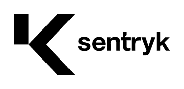
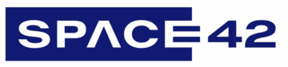
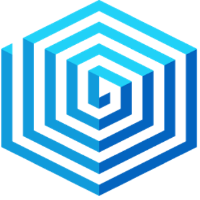
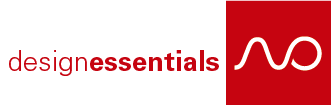
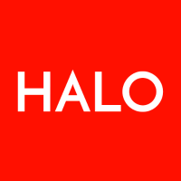
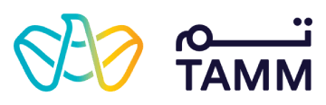
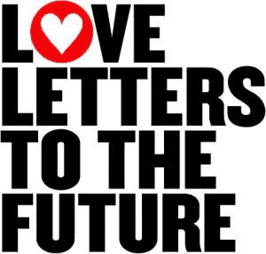

Curriculum Vitae
tech lead / software developer / agent whisperer
Crafts code since 20th century and still thinks it’s fun. Began the professional career with imperative style PHP, transitioned to Object Oriented style for a while but always felt something was not right. Then discovered functional style and got totally corrupted with Node.js. Lately mostly talks with agents, but when not, plays around with photography, tiny hardware, and/or searches for dark places to stargaze from. Favorite quote? “I’d rather write programs that write programs than write programs.”.
Quick facts
Currently in Abu Dhabi, United Arab Emirates.
Born in 1980 — Experienced an analog childhood and a digital adulthood. Possesses both Generation-X cynicism and Millennial optimism and drive.
Understands, speaks and writes in Serbian (native), English (full professional proficiency), and German (professional working proficiency).
Prefers async communication using primarily okram@civokram.com.
Can be reached on +971 50 252 4342 phone number.
Experience overview
- More than 20 years of professional experience in software development.
- Familiar with agile practices and leading cross-functional teams to deliver value.
- Solid JavaScript (prefer TypeScript) knowledge, both back-end (strongly preferred) and front-end.
- Relational, NoSQL, and Document based database experience.
- Used plain-old-http, REST, WebSockets, GraphQL, and gRPC to connect diverse APIs.
- Has no problem learning new languages, libraries, frameworks, paradigms, etc.
- Developed online, offline, real-time, specialized, generalized, and mixed applications.
- Wrote code to generate web sites, PDFs, images, graphs, and code.
- Feels at home in Linux, but can endure other platforms.
- Never lets agents get away with sloppy code.
Experience in more detail

Principal Engineer — Sentryk AI LTD Abu Dhabi, United Arab Emirates
Sep 2026 ⇨ Present
Part of a small, focused team building vx0, an AI-native application security platform. Every scan emits taint paths, dataflow graphs, and code-context embeddings, forming a baseline that AI agents can learn the codebase from. Responsible for everything supporting the scan engine, and contributing to the engine itself when needed.

Software Architect — Space42 PLC Abu Dhabi, United Arab Emirates
Jun 2025 ⇨ Sep 2026 (1 year, 4 months)
Combined the architect role with hands-on development. Built several proofs of concept for various projects. Rewrote Tarjamah, an LLM-powered translation platform, replacing its entire backend. Established technical governance and developed internal tools to support the developers. Delivered the Capital Projects Delivery System for the Abu Dhabi Projects and Infrastructure Centre (ADPIC) from inception to completion.
Principal Developer — Binance Dubai, United Arab Emirates
May 2022 ⇨ Jan 2025 (2 years, 9 months)
Designed and implemented microservices to enhance various blockchain wallet functionalities using Node.js. Contributed to the development of a zero-knowledge wallet and an NFT marketplace solution in React. Built robust admin interfaces to support local Binance branches in different countries, leveraging Vue.js, and ensuring seamless management and operations. Developed a mobile and Telegram-based game using the Phaser framework and React.
Tech Lead / Engineering Manager — appsintegra Abu Dhabi, United Arab Emirates
Nov 2018 ⇨ Jan 2021 (2 years, 3 months)
Leading a multi-cultural team of several developers and QAs, utilizing agile techniques and modern development practices, tools, and infrastructure to, in cooperation with other teams, deliver services linking government entities and end-users (TAMM Project, see below).

Tech Lead — InertiaSystems Ltd Remote
Jun 2016 ⇨ Feb 2017 (9 months)
Leading a small dedicated team to create the backend to manage, and convert Autodesk files to an intermediate format that the next layer of 2D and 3D viewers can load and show online. Extracting and organizing metadata of those files. Integrating viewer code with the infrastructure. Creating real-time chat and changes backend.
VP of Engineering — Loyalis Belgrade, Serbia
Jul 2015 ⇨ Mar 2016 (9 months)
Maintenance and improvements of the existing app, optimizing existing processes (including rewrites), implementing new functionality, and general server maintenance.

External Developer — designessentials Remote
May 2014 ⇨ Jun 2015 (1 year, 2 months)
Development of several websites and custom CMSs for the agency.
Primary Developer — pixelimage Basel, Switzerland
Sep 2014 ⇨ Nov 2014 (3 months)
Complete development of a CMS for mobile apps. The user could create an app online, fill it with content and compile it for publish in the stores without leaving the browser. After publishing, app could be updated almost in realtime, without the need for republishing in the store.
Lead Developer — mediaONE Agency Belgrade, Serbia
Mar 2012 ⇨ Jun 2013 (1 year, 4 months)
Complete development of various projects (mostly websites with a custom CMS, but also a few mobile apps, CRM system, and bespoke business web applications).

Senior Software Developer — HALO Creative Agency Belgrade, Serbia
Jul 2009 ⇨ Mar 2012 (2 years, 9 months)
Complete development of custom CMS solutions for a diverse list of clients.
Programmer — Maccom Media Belgrade, Serbia
Apr 2006 ⇨ Apr 2007 (1 year, 1 month)
Complete development of custom CMS solutions for a diverse list of clients.
Programmer — Cactimedia Remote
Sep 2005 ⇨ Feb 2006 (6 months)
Complete development of custom CMS solutions for a diverse list of clients.
Education
Computer Science
Računarski fakultet, Belgrade, Serbia
2003 ⇨ 2007
Started working and never completed several remaining exams.
General Linguistics and Information Science
Heinrich Heine Universität, Düsseldorf, Germany
2001 ⇨ 2003
Halfway through, decided to switch to Computer Science in Belgrade.
Studienkolleg
Westfälische Wilhelms-Universität, Münster, Germany
2000 ⇨ 2001
Successfully finished.
Notable projects

TAMM — Abu Dhabi Government Services
2018 ⇨ 2021
A unified system helping Abu Dhabi citizens and residents find and use Abu Dhabi government services and information. Enabling the government digital transformation by implementing various services linking the government entities with end-users, eliminating bureaucracy, and simplifying and streamlining processes and procedures.
WAVE Industry Media
{kind=link}
2012 ⇨ 2013
A startup focusing on video publishing for industry. I've created the complete platform for managing videos, including upload, transcoding, and hosting, video player customization, embedding, search, etc. I was the CTO and only developer.

Love Letters to the Future
2009
A global transmedia campaign aimed to raise awareness about dangers of climate change, a narrative game-like experience across the web, mobile and urban spaces. I've created the entire back-end CMS supporting all kinds of user-generated content (text, images, sound, and video) and the whole campaign management capabilities.
Open Source
This CV
Latest iteration of this CV, rendered from plain data to a static HTML page with Vite, published to GitHub Pages, and generating a PDF version using Puppeteer.
Serbian QWERTZ and QWERTY keyboard layouts for macOS
The Serbian keyboard layout that ships with macOS differs from the standard one, which makes macOS frustrating for people like me who are used to the standard layout. Since Bosnian, Croatian, and Slovene use the same layout (according to Wikipedia), their speakers can benefit from this too.
nena ilo lili
A one-button USB HID device on a Seeeduino XIAO SAMD21. It enumerates as a HID composite named nena ilo lili and turns a single momentary button into a keystroke, a key selector, and a mouse jiggler.
insta display
A shuffled photo slideshow for the VIEWE UEDX48480040E-WB-A — a 4-inch 480×480 ESP32-S3 touch display. Reads images from a microSD card and rotates through them with a 1-second crossfade, while the on-board RGB LED glows in the average colour of the photo on screen.
CYD Crypto Ticker
A real-time cryptocurrency price display application for ESP32-based "Cheap Yellow Display" (CYD) boards from Sunton. Features a modern touchscreen interface built with LVGL to monitor your favorite cryptocurrencies with live price updates, trend indicators, and customizable display options.
8x8x8x8
Pixel art animation editor for creating 8×8 pixel animations with 8 frames and an 8-color palette. Also a hardware LED-based display for those. A toy project.